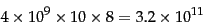

Suppose that the Web had four billion pages, each with ten links to other pages. In the simplest form, we would require 32 bits or 4 bytes to specify each end (source and destination) of each link, requiring a total of
|  | (250) |
We assume that each web page is represented by a unique integer; the specific scheme used to assign these integers is described below. We build an adjacency table that resembles an inverted index: it has a row for each web page, with the rows ordered by the corresponding integers. The row for any page  contains a sorted list of integers, each corresponding to a web page that links to
contains a sorted list of integers, each corresponding to a web page that links to  . This table permits us to respond to queries of the form which pages link to
. This table permits us to respond to queries of the form which pages link to  ? In similar fashion we build a table whose entries are the pages linked to by
? In similar fashion we build a table whose entries are the pages linked to by  .
.
This table representation cuts the space taken by the naive representation (in which we explicitly represent each link by its two end points, each a 32-bit integer) by 50%. Our description below will focus on the table for the links from each page; it should be clear that the techniques apply just as well to the table of links to each page. To further reduce the storage for the table, we exploit several ideas:
In a lexicographic ordering of all URLs, we treat each URL as an alphanumeric string and sort these strings. Figure 20.5 shows a segment of this sorted order. For a true lexicographic sort of web pages, the domain name part of the URL should be inverted, so that www.stanford.edu becomes edu.stanford.www, but this is not necessary here since we are mainly concerned with links local to a single host.
To each URL, we assign its position in this ordering as the unique identifying integer. Figure 20.6 shows an example of such a numbering and the resulting table. In this example sequence, www.stanford.edu/biology is assigned the integer 2 since it is second in the sequence.
We next exploit a property that stems from the way most websites are structured to get similarity and locality. Most websites have a template with a set of links from each page in the site to a fixed set of pages on the site (such as its copyright notice, terms of use, and so on). In this case, the rows corresponding to pages in a website will have many table entries in common. Moreover, under the lexicographic ordering of URLs, it is very likely that the pages from a website appear as contiguous rows in the table.
We adopt the following strategy: we walk down the table, encoding each table row in terms of the seven preceding rows. In the example of Figure 20.6, we could encode the fourth row as ``the same as the row at offset 2 (meaning, two rows earlier in the table), with 9 replaced by 8''. This requires the specification of the offset, the integer(s) dropped (in this case 9) and the integer(s) added (in this case 8). The use of only the seven preceding rows has two advantages: (i) the offset can be expressed with only 3 bits; this choice is optimized empirically (the reason for seven and not eight preceding rows is the subject of Exercise 20.4) and (ii) fixing the maximum offset to a small value like seven avoids having to perform an expensive search among many candidate prototypes in terms of which to express the current row.
What if none of the preceding seven rows is a good prototype for expressing the current row? This would happen, for instance, at each boundary between different websites as we walk down the rows of the table. In this case we simply express the row as starting from the empty set and ``adding in'' each integer in that row. By using gap encodings to store the gaps (rather than the actual integers) in each row, and encoding these gaps tightly based on the distribution of their values, we obtain further space reduction. In experiments mentioned in Section 20.5 , the series of techniques outlined here appears to use as few as 3 bits per link, on average - a dramatic reduction from the 64 required in the naive representation.
While these ideas give us a representation of sizable web graphs that comfortably fit in memory, we still need to support connectivity queries. What is entailed in retrieving from this representation the set of links from a page? First, we need an index lookup from (a hash of) the URL to its row number in the table. Next, we need to reconstruct these entries, which may be encoded in terms of entries in other rows. This entails following the offsets to reconstruct these other rows - a process that in principle could lead through many levels of indirection. In practice however, this does not happen very often. A heuristic for controlling this can be introduced into the construction of the table: when examining the preceding seven rows as candidates from which to model the current row, we demand a threshold of similarity between the current row and the candidate prototype. This threshold must be chosen with care. If the threshold is set too high, we seldom use prototypes and express many rows afresh. If the threshold is too low, most rows get expressed in terms of prototypes, so that at query time the reconstruction of a row leads to many levels of indirection through preceding prototypes.
Exercises.